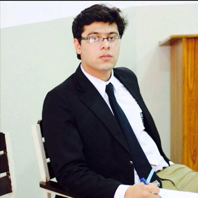

Omer Azhar
Hello Dear Delegates,
What are Model United Nations? MUN's for me are for expressing thoughts, beliefs and an avenue for learning how to further a country's interest amongst other nations. In a nutshell, they are the art of diplomacy and that is what makes me very passionate about them. I can safely say that FIFA will be the most thrilling committee at BMIDC because every committee I have been to in my MUN career ended up having amazing entertainment sessions because that too has been my specialty alongside winning.
But having said that, I sincerely hope that each and everyone of you shows up at the committee with adequate research on the relevant topics. As a chair, I strongly believe that all of you should be well prepared so that a competitive committee is in order, something that I'd love to see.
FIFA encapsulates technicalities and problems deeply associated with football and significant issues rampant throughout the world. The committee has played a pivotal role in establishing mechanisms for eradicating corruption, tackling stagnation in the game itself and ensuring top standards to make football more entertaining.
The committee's work and topics of discussions make it extremely significant as it affects the lives of billions of fans across the face of this planet. Hence each and everyone of you is expected to speak.
Having won numerous MUN's, I can safely say that MUN's aren't about going back home with a trophy because a couple of months down the road, one usually forgets the accolades but the memories and moments experienced. I will do everything possible to make sure that this is one of the best experiences of your life. Lastly, I hope that you win whatever you wish to at this MUN and make this a proud committee of the of the biggest MUN in the country.
Your chair,
Omer Azhar.